IaaS 이론
— 컨테이너 플랫폼과 클라우드 인프라 자원을 어떻게 구성하는가
IaaS가 실제로 무엇을 제공하는지, 그 위에 컨테이너 플랫폼(K-PaaS)이 어떤 오픈소스로 조립되는지, 그리고 NHN Cloud 콘솔에서 네트워크·컴퓨팅 자원을 어떤 순서로 만드는지까지 하나의 흐름으로 정리합니다.
이 강의를 보는 순서
- 왜 컨테이너 플랫폼이 필요한가 — 클라우드 인프라 위에서 SW·서비스를 개발·운영하는 표준 기반 환경이 왜 필요하고, K-PaaS가 왜 오픈소스로 이를 표준화했는지
- 그 플랫폼은 어떤 요소로 조립되는가 — 클러스터를 구성하는 오픈소스 12종과 포털을 구성하는 오픈소스 4종이 각각 어떤 역할을 맡는지
- 그 아래 실제 자원은 어떻게 만들어지는가 — NHN Cloud 콘솔에서 VPC부터 Instance까지 IaaS 자원을 생성·연결하는 절차
컨테이너 플랫폼(Container Platform)이란 무엇인가
이 강의는 "가상화 일반이론"이 아니라, K-PaaS 표준모델이 실제로 무엇을 표준화하는지와 NHN Cloud 콘솔에서 IaaS 자원을 직접 만드는 과정을 다룹니다. 먼저 그 출발점인 컨테이너 플랫폼의 정의부터 봅니다.
01 · 컨테이너 플랫폼의 정의와 필요성
K-PaaS 표준모델은 컨테이너플랫폼을 "클라우드 인프라 위에서 SW나 서비스를 개발·실행·운영·관리하는 기반 SW 환경"으로 정의합니다. 조금 더 구체적으로는 "쿠버네티스 기반의 단독배포 기능을 구현하여, 클라우드 기반 서비스 및 운영에 필요한 부가서비스를 지원하는 오픈소스 PaaS 플랫폼"이라고 설명합니다. (출처: K-PaaS 대표포털 k-paas.or.kr)
줄여 말하면, 컨테이너 플랫폼은 "쿠버네티스라는 자동 관리자 위에 로그인 기능·이미지 저장소·보안 키 관리소 같은 부속품을 미리 다 붙여놓은 완성품 세트"라고 보면 됩니다. 개발팀 입장에서는 이 세트를 새로 조립할 필요 없이, 그 위에 자기 서비스 코드만 얹으면 되는 것입니다.
클라우드 네이티브 애플리케이션을 만들려면 컨테이너 오케스트레이션, 이미지 레지스트리, 인증, 시크릿 관리 등 여러 플랫폼 서비스가 공통으로 필요합니다. 그런데 이 기능들을 상용 PaaS마다 제각각 구현하면 특정 벤더에 종속되기 쉽습니다. K-PaaS는 이 핵심 기능들을 오픈소스로 개발·개방해, 다양한 상용 PaaS와 호환되는 표준 플랫폼을 누구나 구축할 수 있게 하려는 목적을 갖습니다. 1강에서 다룬 "벤더 종속" 문제에 대한 실제 대응 사례로 볼 수 있습니다.
클라우드 인프라(Public/Private) 위에서 자체적으로 SW·서비스를 개발·실행·운영·관리해야 하는 조직(공공기관, 기업 내부 플랫폼팀 등)이 쿠버네티스 기반의 표준화된 컨테이너 플랫폼을 구축할 때 적용됩니다.
컨테이너 플랫폼은 쿠버네티스 클러스터 + 운영에 필요한 스토리지 서버(NFS/Rook Ceph)로 구성되며, 디스크립션(설정 정의 파일)을 기반으로 컨테이너화된 애플리케이션을 배포하는 방식으로 동작합니다.
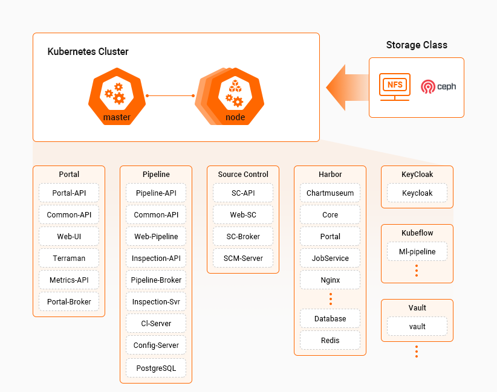
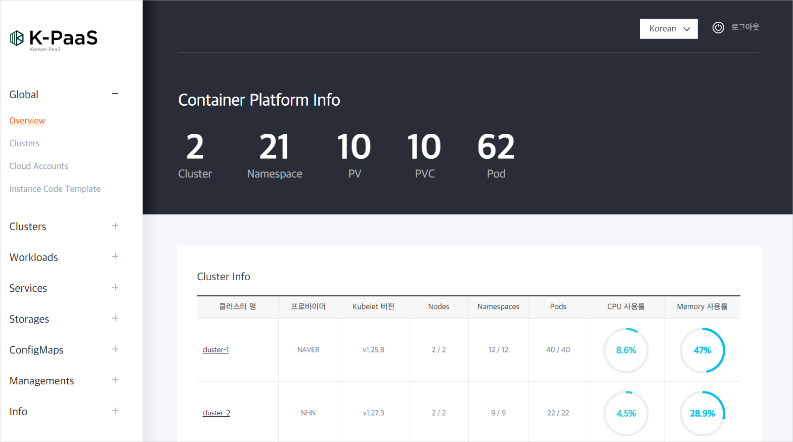
02 · 컨테이너 플랫폼의 구성과 배포 방식
가장 기본이 되는 배포 방식은 단독형 배포입니다 — "컨테이너 플랫폼을 단독으로 배포하여 독립된 쿠버네티스 환경을 제공하는 배포 방식"을 말합니다.
지금 배우는 "단독형 배포"가 바로 이 교육과정에서 이후 4강 IaaS 구축·5강 K8S 클러스터 설치·6강 PaaS 설치에서 직접 실습으로 이어질 배포 방식입니다 — 하나의 Kubernetes cluster 안에 필요한 구성요소를 전부 갖추는 실습 환경에 그대로 적용됩니다.
Kubernetes 배포 → Kubernetes Cluster 구성 → 컨테이너 플랫폼 패키지 배포 순서로 진행되며, 그 결과 하나의 Kubernetes cluster 안에 Portal, Harbor, Keycloak, Storage, Database, Terraform, Istio, Kubeflow, Ingress Controller, Vault가 모두 포함된 완성된 환경이 만들어집니다.
Portal, Harbor, Keycloak처럼 낯선 이름이 한꺼번에 나열되어 있지만 지금 당장 다 외울 필요는 없습니다. 이름 하나하나는 다음 파트에서 순서대로 뜯어볼 예정이고, 지금 기억할 것은 "단독형 배포를 하면 이 부품들이 전부 포함된 완성품 하나가 만들어진다"는 사실뿐입니다.
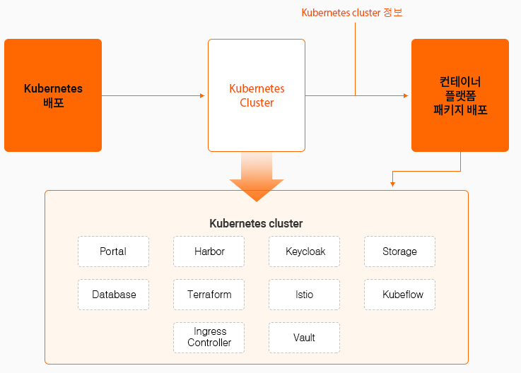
이 결과 박스 안에 있는 Portal/Harbor/Keycloak/Vault 같은 이름들이 바로 다음 파트에서 하나씩 뜯어볼 K-PaaS 오픈소스 소프트웨어들입니다.
컨테이너 플랫폼을 구성하는 오픈소스 — K-PaaS 주요 소프트웨어
앞서 본 구성도 안의 이름들이 실제로는 각기 다른 문제를 풀기 위해 채택된 오픈소스 조합입니다. 이번 파트에서는 그 조합을 클러스터 구성 소프트웨어와 포털 구성 소프트웨어로 나누어 하나씩 살펴봅니다.
컨테이너 플랫폼 하나를 완성하려면 "클러스터를 어떻게 자동으로 세우고, 컨테이너를 어떻게 실행하고, Pod끼리 어떻게 통신하고, 트래픽을 어떻게 외부에 노출하고, 스토리지는 어떻게 마운트할지" 등 역할이 서로 다른 여러 문제를 각각 풀어야 합니다. K-PaaS는 이 각각의 문제에 검증된 오픈소스 하나씩을 표준 조합으로 채택해, 조직마다 매번 새로 고민하지 않고 동일한 조합으로 플랫폼을 구축할 수 있게 합니다.
집을 지을 때 목수·배관공·전기 기사가 각자 자기 분야만 맡는 것과 비슷합니다. 클러스터를 자동으로 세우는 도구, 컨테이너를 돌리는 도구, 네트워크를 연결하는 도구, 저장 공간을 담당하는 도구가 전부 따로 있고, K-PaaS는 이 역할별 담당자들을 미리 정해진 조합으로 묶어놓은 것입니다. 아래 표는 그 "역할 분담표"라고 보면 됩니다.
클러스터 구성 소프트웨어는 쿠버네티스 클러스터 자체(오케스트레이션·네트워킹·스토리지) 계층에 적용되고, 포털 구성 소프트웨어는 그 위에서 사용자가 실제로 로그인하고 이미지를 올리고 시크릿을 관리하는 운영 포털 계층에 적용됩니다.
각 도구가 어떤 역할을 담당하는지 정리하면 아래 표와 같습니다.
| 역할 | 담당 소프트웨어 |
|---|---|
| 클러스터 자동 구축 | Kubespray |
| 오케스트레이션(핵심) | Kubernetes |
| 컨테이너 런타임(OCI 표준) | CRI-O |
| 컨테이너 생성/이미지 빌드 | Podman (+ Buildah, Skopeo) |
| 네트워킹(CNI, Pod 간 통신) | Calico |
| 서비스 로드밸런싱(L2/L3) | MetalLB |
| 외부 HTTP 트래픽 라우팅(Ingress) | Ingress Nginx Controller |
| 쿠버네티스 패키지 관리 | Helm |
| 서비스 메시(MSA 간 통신 관리) | Istio |
| 인프라 프로비저닝(IaC) | OpenTofu |
| 파일 스토리지(간편, 단일 서버) | NFS |
| 분산 스토리지(대규모, 자가치유) | Rook Ceph |
| 시크릿(토큰/키/인증서) 관리 | Vault |
| 컨테이너 이미지 레지스트리 | Harbor |
| 데이터베이스(RDBMS) | MariaDB |
| 인증/인가(IAM) · SSO | Keycloak |
※ 원본 8페이지 표에는 클러스터구성 소프트웨어로 Kubeflow(Apache License 2.0)도 포함되어 있으나, 구성도 이미지에는 "Kubeflow / ML-pipeline"으로만 표시되고 별도 설명 페이지가 없습니다. 머신러닝 파이프라인 관련 컴포넌트라는 것 외에 원문에 상세 설명이 없어, 아래 카드 목록에서는 다루지 않고 표에만 포함합니다.
01 · 클러스터 구성 소프트웨어 (12종)
원본 8페이지의 전체 소프트웨어 목록(라이선스 포함)은 다음과 같습니다.
| 구분 | 오픈소스명 | 라이선스 |
|---|---|---|
| 클러스터구성 소프트웨어 | Kubespray | Apache License 2.0 |
| 클러스터구성 소프트웨어 | Kubernetes | Apache License 2.0 |
| 클러스터구성 소프트웨어 | CRI-O | Apache License 2.0 |
| 클러스터구성 소프트웨어 | Calico | Apache License 2.0 |
| 클러스터구성 소프트웨어 | MetalLB | Apache License 2.0 |
| 클러스터구성 소프트웨어 | Ingress Nginx Controller | Apache License 2.0 |
| 클러스터구성 소프트웨어 | Helm | Apache License 2.0 |
| 클러스터구성 소프트웨어 | Istio | Apache License 2.0 |
| 클러스터구성 소프트웨어 | Podman | Apache License 2.0 |
| 클러스터구성 소프트웨어 | OpenTofu | Mozilla Public License 2.0 |
| 클러스터구성 소프트웨어 | Kubeflow | Apache License 2.0 |
| 클러스터구성 소프트웨어 | NFS | Apache License 2.0 |
| 클러스터구성 소프트웨어 | Rook Ceph | Apache License 2.0 |
| 포털구성 소프트웨어 | Vault | Business Source License 1.1 |
| 포털구성 소프트웨어 | Harbor | Apache License 2.0 |
| 포털구성 소프트웨어 | MariaDB | General Public License 2.0 |
| 포털구성 소프트웨어 | Keycloak | Apache License 2.0 |
(출처: K-PaaS 대표포털 k-paas.or.kr)
- Kubespray
- kubernetes 설치를 지원하는 자동화 도구. Ansible을 통해 구축하려는 설정값만 맞게 변경해 실행하면 Public Cloud 또는 Private Cloud 등에서 kubernetes cluster를 자동으로 구축할 수 있습니다. GitHub에 오픈소스로 공개되어 누구나 쉽게 구축할 수 있으며, Ansible 플레이북·인벤토리·프로비저닝 도구와 운영체제·쿠버네티스 클러스터 설정관리 작업에 대한 도메인 지식이 결합된 도구입니다.
- Kubernetes
- 컨테이너화된 애플리케이션을 자동으로 배포·스케일링·관리해주는 오케스트레이션 도구. 프로덕션 애플리케이션은 다수의 컨테이너에 걸쳐 있고 이 컨테이너들은 다수의 서버 호스트에 배포되어야 하는데, 쿠버네티스는 이 워크로드를 위한 오케스트레이션·관리 기능을 제공합니다. 여러 컨테이너에 걸쳐 서비스를 구축하고 클러스터 전체에서 컨테이너 일정 계획·확장·상태 관리가 가능하며 IT 보안도 강화됩니다. (출처: RedHat)
- CRI-O
- Kubernetes를 위한 표준(OCI) 컨테이너 런타임 인터페이스. CRI와 OCI에서 유래한 프로젝트로, 컨테이너 런타임 및 이미지가 OCI와 호환되는 데 중점을 둡니다. CRI 표준 컴포넌트를 최소한의 런타임으로 구현해 모든 OCI 호환 런타임/이미지를 지원하며, 실행 목적으로 경량화되어 도커가 제공하는 컨테이너 생성·이미지 빌드 기능은 제공하지 않고 그 역할은 Buildah·Podman·Skopeo 같은 도구가 나눠 구현합니다. (출처: 삼성SDS 인사이트)
- Calico
- Container/VM 환경에서 L3 기반 Virtual Network 구축을 지원하는 도구. Kubernetes는 Pod 간 통신에 CNI(Container Network Interface)를 사용하는데, Calico는 대표적인 3rd-party CNI 플러그인입니다. Linux/Windows에 대해 인터넷과 동일한 IP 네트워킹 원칙 기반으로 Pod를 연결하는 네트워킹·네트워크 정책 솔루션을 제공하며, 캡슐화·오버레이 없이 구축되어 고성능 대규모 데이터센터 네트워킹과 분산 방화벽 기반의 세분화된 의도기반 네트워크 보안정책을 제공합니다.
- MetalLB
- Kubernetes의 Service를 LoadBalancer 타입으로 서비스할 수 있게 해주는 솔루션. 노드의 IP 대신 LoadBalancer IP로 서비스를 외부에 노출할 수 있어 운영환경에서 유용합니다. 특별한 네트워크 설정 없이 기존 L2(ARP/NDP)와 L3(BGP) 네트워크로 LoadBalancer를 구현하므로 네트워크를 새로 배울 부담 없이 쉽게 연동할 수 있습니다.
- Ingress Nginx Controller
- Kubernetes 및 컨테이너화된 클라우드 네이티브 앱을 위한 트래픽 관리 솔루션. Ingress는 클러스터 내 서비스에 대한 외부 접근을 관리하는 API 오브젝트(주로 HTTP 관리)이며, Ingress Controller는 Ingress가 동작하기 위해 반드시 필요한 컨트롤러로 Ingress 리소스를 등록하면 실제 규칙을 적용·관리합니다. CNCF 설문조사에서 응답자의 약 2/3가 사용한다고 답할 만큼 대표적인 Ingress Controller입니다.
- Helm
- Kubernetes용으로 구축된 소프트웨어를 제공·공유·사용할 수 있는 오픈소스 패키지 매니저. Helm 차트라는 패키징 형식으로 애플리케이션 배포를 자동화해 프로세스를 간소화하며, 차트는 컨테이너 간 일관성을 유지하면서 애플리케이션의 특정 요구사항 충족 방법을 결정합니다. 특정 구성에 중요한 항목을 기반으로 변수를 재정의해 여러 인스턴스에 동일한 구성 프레임워크를 적용할 수 있습니다. (출처: RedHat)
- Istio
- 오픈소스 기반의 분산형 마이크로서비스 앱을 어디서나 실행할 수 있도록 지원하는 서비스 메시. 클라우드 기반 애플리케이션을 구성하는 다양한 마이크로서비스 관리에 사용되며 마이크로서비스 간 통신·데이터 공유 방법을 지원합니다. 플랫폼 독립적이며 클라우드/온프레미스/Kubernetes/Mesos 등 다양한 환경에서 실행되도록 설계되었고, 트래픽 관리·승인·암호화는 물론 감사 및 관측가능성 같은 서비스 간 네트워크 작업을 단순화합니다. (출처: Google Cloud)
- Podman
- 오픈소스 기반, Linux 시스템에서 컨테이너를 개발·관리·실행하기 위한 도구. libpod 라이브러리로 컨테이너 생태계 전체를 관리하며, 데몬이 없는 아키텍처로 컨테이너를 더 안전하고 손쉽게 관리합니다. Docker는 컨테이너 생성·관리를 위한 올인원 툴인 반면, Podman은 Buildah 및 Skopeo 등 다른 도구를 함께 사용해야 한다는 차이가 있습니다.
- OpenTofu
- 클라우드 환경에서 인프라 관리를 단순화하는 오픈소스 코드 프로비저닝 도구(IaC). Terraform이 오픈소스에서 비즈니스 라이선스로 변경되면서 등장한 대안 오픈소스입니다. 버전관리·재사용·공유가 가능한, 사람이 읽을 수 있는 구성 파일로 클라우드 및 온프레미스 리소스를 정의하며, 일관된 워크플로우로 수명주기 전반의 인프라를 프로비저닝·관리하고 컴퓨팅/스토리지/네트워킹 같은 하위 수준부터 DNS/SaaS 기능 같은 상위 수준 구성요소까지 관리할 수 있습니다. (출처: OpenTofu 공식문서)
- NFS
- 네트워크를 통해 다른 호스트에 있는 파일을 공유해 사용할 수 있도록 한 분산 파일 시스템. Kubernetes에서는 컨테이너 파일 손실 방지와 컨테이너 간 파일 공유를 위해 볼륨 추상화를 이용하며 다양한 네트워크 볼륨을 Pod에 마운트할 수 있습니다. 1984년 Sun Microsystems가 개발했고, 대부분 운영체제에서 사용 가능하고 여러 클라이언트가 동시에 마운트할 수 있으며, 다른 클러스터링 솔루션보다 안정성은 다소 떨어질 수 있으나 서버 하나만으로 간편하게 사용할 수 있고 로컬 스토리지처럼 쓸 수 있다는 장점이 있습니다. (출처: 개인 블로그)
- Rook Ceph
- 높은 확장성과 다양한 스토리지 프로토콜 인터페이스를 지원하는 오픈소스 분산 스토리지 시스템. Ceph는 파일·블록·객체 스토리지를 제공하고 대규모 프로덕션 클러스터에 배포되는 분산 스토리지 시스템이며, Rook은 클라우드 환경에 최적화된 Ceph를 관리하는 오픈소스 도구로 Ceph 배포·관리를 자동화해 자가관리·자가확장·자가치유 스토리지 서비스를 제공합니다(Kubernetes에 Ceph를 배포/구성/프로비저닝/확장/업그레이드/모니터링). CNCF Graduated 프로젝트입니다. (출처: SK DEVOCEAN)
여러 노드의 여러 Pod가 각자 컨테이너 볼륨을 하나의 NFS 서버에 마운트해서 공유하는 구조입니다. 아래 그림처럼 각 Node 안의 여러 Pod·Container가 SSH를 거쳐 하나의 NFS Server로 연결됩니다.
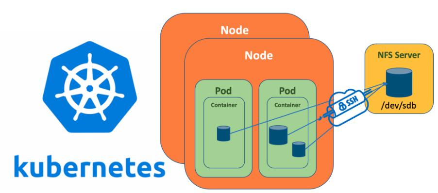
/dev/sdb)로 연결되는 다이어그램 — NFS의 동작 원리를 보여줍니다.02 · 포털 구성 소프트웨어 (4종)
- Vault
- 신원기반 시크릿 및 암호화 관리 시스템(HashiCorp). UI, CLI, HTTP API 등 인터페이스를 제공하며 저장된 시크릿 정보를 안전하게 사용할 수 있는 방법을 제공합니다. 시크릿은 토큰, API 키, 비밀번호, 암호화 키, 인증서 등 접근을 엄격히 통제하려는 모든 것을 포함하며 모든 시크릿에 대한 통합 인터페이스를 제공합니다. 클라이언트(사용자/시스템/앱)에게 시크릿 또는 저장된 민감 데이터 접근 권한을 제공하기 전에 유효성을 검사하고 승인합니다. (출처: HashiCorp Vault 공식문서)
- Harbor
- 오픈소스 기반의 컨테이너 이미지를 관리하는 기능을 구현한 레지스트리. Docker Hub처럼 이미지를 저장하는 저장소이며 Registry의 장점을 포함하고, 직관적인 Web 기반 UI로 효율적인 이미지 관리가 가능합니다. Docker Hub는 공용 레지스트리라 보안 액세스가 어렵거나 회사 프로젝트 이미지 업로드에 부적합할 수 있는데, Harbor는 폐쇄환경에서 사용되는 개인 레지스트리로 이 문제를 해결합니다.
- MariaDB
- 오픈소스 기반 관계형 데이터베이스 관리 시스템(RDBMS). MySQL의 수정된 버전으로 MySQL 데이터·테이블 정의 파일을 채택하고 동일한 클라이언트 프로토콜/API/포트/소켓을 사용해 MySQL 사용자가 번거로움 없이 전환할 수 있습니다. MySQL 대비 확장성이 뛰어나고 쿼리 속도가 빨라 대용량 데이터 관리에 유용하며, MySQL에 없는 기능(sequence 스토리지 엔진, 가상 열 등)을 보유하고 한 테이블에 여러 엔진을 사용할 수도 있습니다. (출처: 위키백과)
- Keycloak
- 오픈소스 기반의 IAM(Identity and Access Management) 소프트웨어. 사용자 인증(Authentication)과 인가(Authorization) 관리 기능을 국제 표준 프로토콜(OIDC, SAML, OAuth 2.0 등) 기반으로 제공합니다. 여러 서비스/애플리케이션에 대한 사용자 인증·권한부여를 중앙에서 관리할 수 있으며, SSO(한 번의 로그인으로 연결된 여러 사이트를 자동 접속·이용)로 사용자 편의성을 제공합니다. 다양한 컨테이너 오케스트레이션 시스템에서 실행 가능합니다.
이 오픈소스 조합이 실제로 동작하려면 그 밑에 진짜 서버·네트워크·스토리지, 즉 IaaS 자원이 있어야 합니다. Part Ⅲ에서는 NHN Cloud 콘솔로 그 자원(VPC, Subnet, Instance 등)을 직접 만들어봅니다.
클라우드 컴퓨팅 리소스(IaaS) 이해 — NHN Cloud 실습
NHN Cloud 콘솔에서는 "이해(개념) → 생성 → 설정" 3단계 패턴이 리소스마다 반복됩니다. 아래 각 단원도 이 패턴(정의 → why → where → how(생성 단계) → 실무 제약사항)으로 구성했습니다.
01 · NHN Cloud 아키텍처 개요 (AWS 아키텍처와 비교)
개별 리소스(VPC, Subnet, Security Group 등)를 하나씩 만들기 전에 전체 그림을 먼저 봐야, 지금 만드는 리소스가 전체 구조의 어느 위치에 들어가는지 이해할 수 있습니다. NHN Cloud와 AWS의 아키텍처 다이어그램을 나란히 비교하면, 클라우드 제공자마다 이름은 달라도 "격리된 네트워크 안에서 역할별로 서브넷을 나누고, 그 경계에 게이트웨이·방화벽을 둬 트래픽을 통제한다"는 구조 자체는 공통적임을 확인할 수 있습니다.
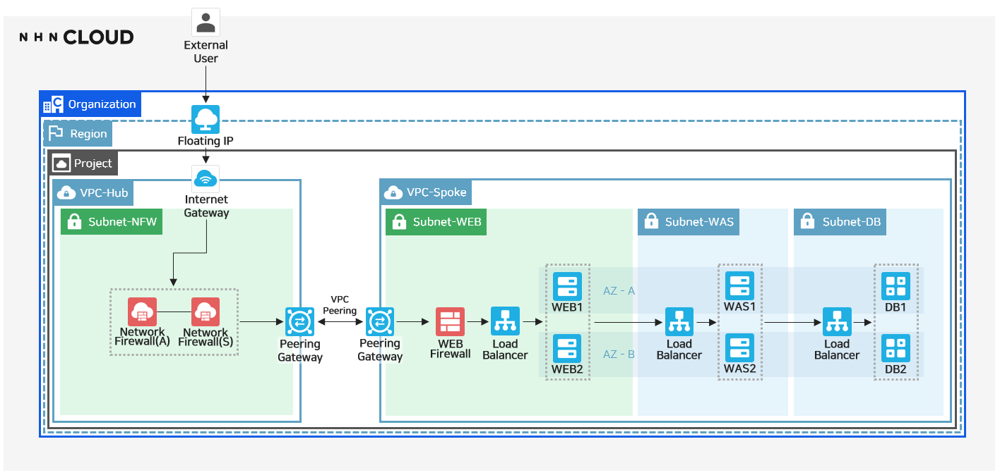
| 구성요소 | 역할 |
|---|---|
| Organization / Region / Project | 계정의 조직 구조 — 프로젝트 단위로 자원을 격리 |
| VPC-Hub | Network Firewall(A/S 이중화)과 인터넷에서 들어오는 Floating IP·Internet Gateway를 배치해 외부 연결을 총괄하는 허브 VPC |
| VPC-Spoke | Subnet-WEB / Subnet-WAS / Subnet-DB로 계층을 나눠 실제 서비스가 도는 스포크 VPC |
| Peering Gateway | Hub VPC와 Spoke VPC를 서로 연결 |
| Floating IP | External User가 인터넷을 통해 들어오는 진입점 |
| WEB Firewall + Load Balancer | Subnet-WEB 진입 지점의 WEB Firewall이 트래픽을 필터링하고, WEB→WAS→DB 계층 사이사이의 Load Balancer가 트래픽을 분산 |
| AZ-A / AZ-B | 가용성 영역 이중화 (WEB1/WEB2, WAS1/WAS2, DB1/DB2로 각 계층을 이중 배치) |
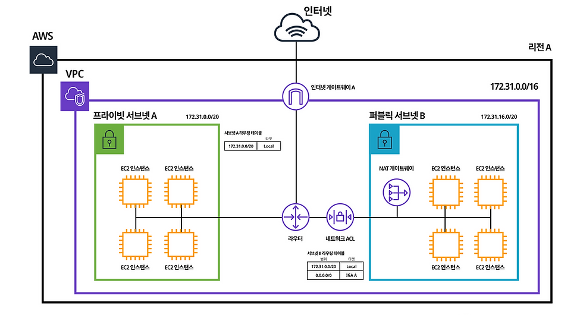
| 구성요소 | 역할 |
|---|---|
| VPC (172.31.0.0/16) | 리전(리전 A) 내 격리된 네트워크 |
| 인터넷 게이트웨이 A | VPC를 인터넷에 연결 |
| 프라이빗 서브넷 A (172.31.0.0/20) | 라우팅테이블에 Local 경로만 존재 — 외부에서 직접 접근 불가, EC2 인스턴스 4대 배치 |
| 퍼블릭 서브넷 B (172.31.16.0/20) | 라우팅테이블에 172.31.0.0/20→Local, 0.0.0.0/0→IGA A 경로 존재, NAT 게이트웨이 + EC2 인스턴스 4대 배치 |
| 라우터 / 네트워크 ACL | 서브넷 간·외부 트래픽의 경로 지정 및 필터링 |
이름은 달라도 "VPC(격리 네트워크) → Subnet(역할별 분리) → Internet Gateway(외부 연결 지점) → 방화벽/보안그룹(트래픽 통제)"이라는 4단 구조는 동일합니다. 이 강의에서 NHN Cloud 콘솔로 직접 만들 VPC → Subnet → Internet Gateway → Security Groups가 바로 이 구조의 실제 구성요소들입니다.
02 · Network — VPC
VPC(Virtual Private Cloud)는 논리적으로 격리된 가상의 네트워크에서 NHN Cloud의 리소스를 운영할 수 있는 기능을 말하며, 각각의 VPC는 완전히 독립된 서브넷, 라우팅테이블과 게이트웨이를 구성하고 제어할 수 있습니다.
아파트 단지에 비유하면 이해하기 쉽습니다. VPC는 담장으로 둘러싸인 단지 전체(다른 입주자와 완전히 분리된 내 소유의 부지)이고, 곧이어 배울 Subnet은 그 단지 안의 동(건물)별 구역, Internet Gateway는 단지 정문, Security Groups는 각 동 앞을 지키는 경비실이라고 생각하면 이어지는 Network 단원들이 훨씬 쉽게 연결됩니다.
여러 고객(테넌트)이 하나의 물리 인프라를 공유하는 클라우드 환경에서, 각 사용자의 네트워크가 서로 간섭하거나 노출되지 않으려면 논리적으로 완전히 격리된 가상 네트워크가 필요합니다.
여러 프로젝트(운영/테스트 환경, 팀별 네트워크)를 하나의 클라우드 계정 안에서 서로 격리해 운영해야 할 때 적용됩니다. 위 아키텍처 다이어그램의 VPC-Hub/VPC-Spoke 구분이 대표적 예시입니다.
- CIDR은 사설 주소 범위로 입력해야 함 (
10.0.0.0/8,172.16.0.0/12,192.168.0.0/16) - 링크 로컬 주소 범위(
169.254.0.0/16)는 입력 불가 /24보다 큰 CIDR 블록은 입력 불가- VPC는 계정당 최대 3개까지 생성 가능
- 다른 리전의 VPC와 통신할 경우 Peering Gateway의 리전 피어링을 사용하면 트래픽 비용을 절감할 수 있음(리전 피어링 미사용 시 인터넷 트래픽으로 과금, 사용 시 다른 리전에서 VPC 피어링을 통한 트래픽으로 과금)
Network > VPC 메뉴 진입
"VPC 생성" 클릭
이름 입력
32자 이내, 영문자·숫자·-·_만 입력 가능IP 버전 선택
IPv4CIDR 입력
예:192.168.0.0/16확인 클릭
VPC 생성 완료 (상태:available)
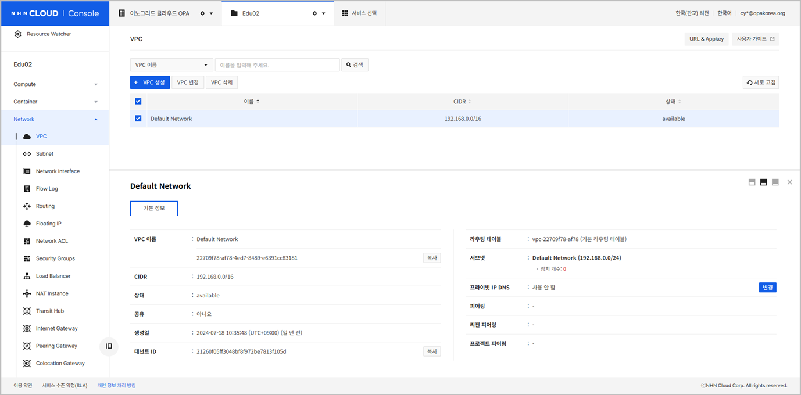
192.168.0.0/16, 상태 available, 라우팅테이블 vpc-22709f78-af78(기본 라우팅 테이블), 서브넷 Default Network(192.168.0.0/24)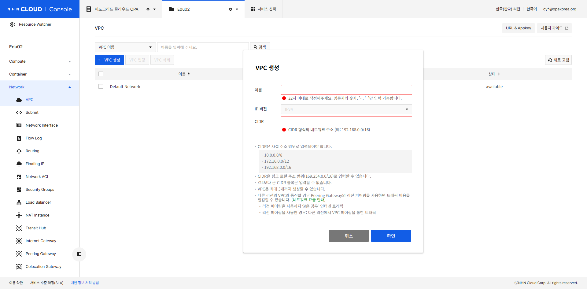
03 · Network — Subnet
Subnet은 Subnetwork를 의미하며 IP 네트워크의 더 작은 단위로 세분화된 IP 주소 영역입니다.
VPC 전체를 하나의 네트워크로 쓰면 모든 자원이 뒤섞여 역할별(웹/WAS/DB)로 트래픽을 분리하거나 서로 다른 보안 정책을 적용하기 어렵습니다. Subnet으로 나누면 위에서 본 NHN 아키텍처의 Subnet-WEB/Subnet-WAS/Subnet-DB처럼 계층별로 나눠 각기 다른 보안 수준을 적용할 수 있습니다.
3-Tier 아키텍처(웹-WAS-DB)처럼 계층별 보안 수준이 다른 서비스를 하나의 VPC 안에서 분리 운용할 때 적용됩니다.
- CIDR은 소속 VPC의 CIDR 범위 내에 있어야 함
/28보다 큰 CIDR 블록은 입력 불가- 서브넷은 VPC당 최대 10개까지 생성 가능
- Subnet은 Routing Table과의 연결이 필수 — 라우팅 테이블이 있어야 이 서브넷에서 나가는 트래픽이 어디로 전달될지 정의되기 때문
Network > Subnet 메뉴 진입
"서브넷 생성" 클릭
이름 입력, 소속 VPC 선택
IP 버전 선택, CIDR 입력
VPC CIDR 범위 내,/28이하확인
서브넷 생성 완료"라우팅 테이블 연결" 버튼으로 라우팅 테이블 연결
(필수)
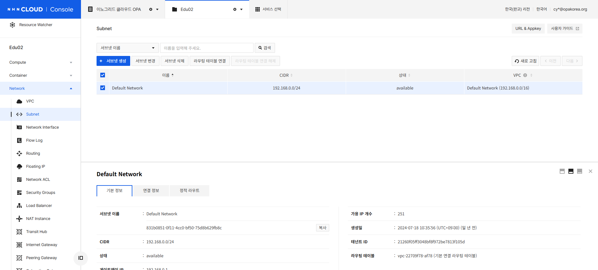
192.168.0.0/24, 가용 IP 개수 251, 라우팅 테이블 vpc-22709f78-af78(기본 연결 라우팅 테이블), 게이트웨이 IP 192.168.0.1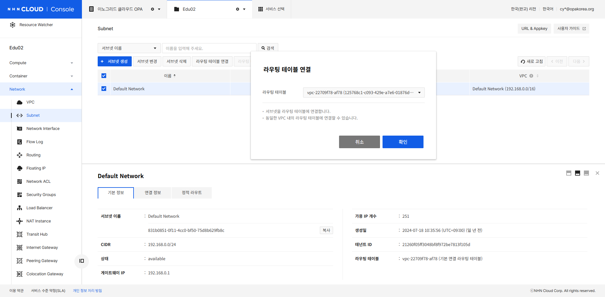
04 · Network — Network Interface
네트워크 인터페이스는 가상 네트워크 카드를 나타내는 VPC의 논리적 네트워크 요소입니다.
인스턴스(가상 서버)가 네트워크와 통신하려면 물리 서버의 랜카드(NIC)에 해당하는 가상의 연결 지점이 필요합니다. Network Interface는 인스턴스와 분리된 독립 리소스이므로, IP를 유지한 채 다른 인스턴스로 옮기거나 하나의 인스턴스에 여러 개를 추가하는 것도 가능합니다.
인스턴스에 여러 네트워크(예: 관리망 + 서비스망)를 동시에 연결해야 하거나, 장애 시 네트워크 설정을 그대로 다른 인스턴스로 옮기고 싶을 때 적용됩니다.
생성 시 이름 / VPC / 서브넷-사설IP(자동 할당 또는 IP 직접 지정) / 가상 IP 사용 여부 / 보안(사용 시 보안그룹 선택)을 설정합니다. 생성 후 플로팅 IP를 연결하면 외부에서 접근 가능해집니다. 이미 실행 중인 인스턴스에 새 Network Interface를 추가 연결하려면 반드시 해당 인스턴스를 중지해야 "연결 추가" 버튼이 활성화됩니다.
Network > Network Interface 메뉴 진입
"네트워크 인터페이스 생성" 클릭이름 입력, VPC 선택
서브넷-사설IP 선택(자동 할당 또는 IP 직접 지정)가상 IP 사용 여부, 보안(보안그룹) 선택
확인 → 생성 완료(선택) 플로팅 IP 연결
플로팅 IP를 생성하여 네트워크 인터페이스에 연결(기존 인스턴스에 연결 시)
연결할 인스턴스 선택 → 인스턴스 중지 → 중지 완료 시 "연결 추가" 버튼 활성화 → 연결 → 연결 확인
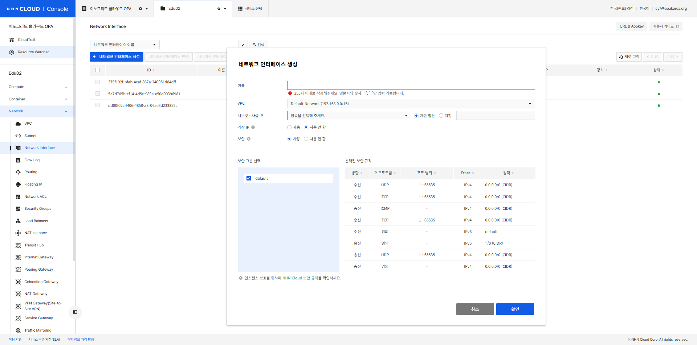
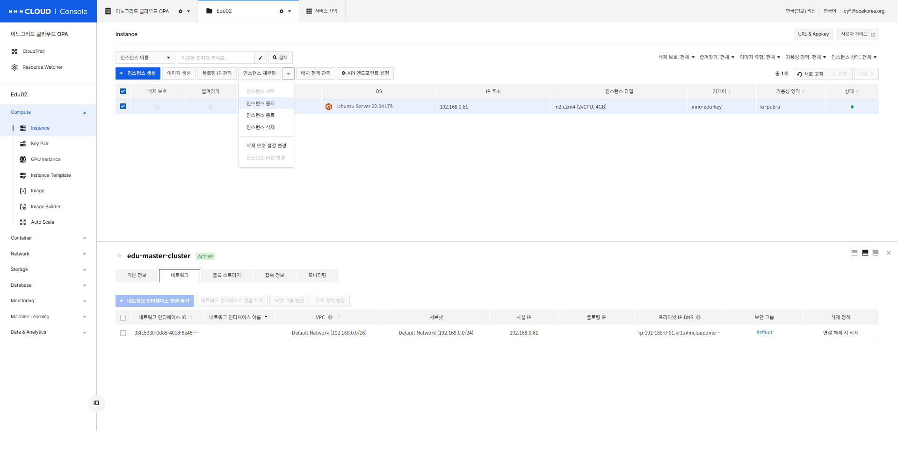
05 · Network — Routing
Routing은 CIDR notation에 의해 정의되는 전달 경로를 기술하는 테이블로, 목적지 주소에 의해 전달되는 장비를 지정 또는 우회합니다.
서브넷에서 나가는 패킷은 목적지(VPC 내부인지, 인터넷인지, 다른 리전 VPC인지)에 따라 다른 경로로 나가야 합니다. 이 경로 결정 규칙을 테이블 형태로 관리해야 서브넷마다 매번 새로 설정하지 않고 재사용할 수 있습니다.
여러 서브넷이 동일한 아웃바운드 정책(예: 모두 같은 인터넷 게이트웨이로 나감)을 공유해야 할 때, 하나의 라우팅 테이블을 여러 서브넷에 연결해 일괄 관리합니다.
라우팅 테이블은 VPC 생성 시 기본 라우팅 테이블이 함께 생성되며, 라우팅 방식은 "분산형 라우팅(DVR)"을 사용합니다. Routing은 Internet Gateway와의 연결이 필수입니다 — 인터넷 게이트웨이를 연결해야 외부(인터넷) 트래픽에 대한 경로가 생기기 때문입니다.
라우팅 테이블은 "이 주소로 가려면 이 문으로 나가라"고 적어놓은 우편 배송 경로표와 같습니다. 서브넷이라는 동네에서 소포(트래픽)가 출발할 때, 목적지가 같은 동네(VPC 내부)인지 바깥(인터넷)인지에 따라 어느 문(게이트웨이)으로 내보낼지를 이 표가 정해줍니다.
Network > Routing 메뉴 진입
VPC 생성 시 기본 라우팅 테이블 자동 생성됨"인터넷 게이트웨이 연결" 클릭
연결할 인터넷 게이트웨이 선택 → 확인 (필수)Subnet 메뉴에서 라우팅 테이블 연결
"라우팅 테이블 연결"로 해당 라우팅 테이블을 원하는 서브넷에 연결
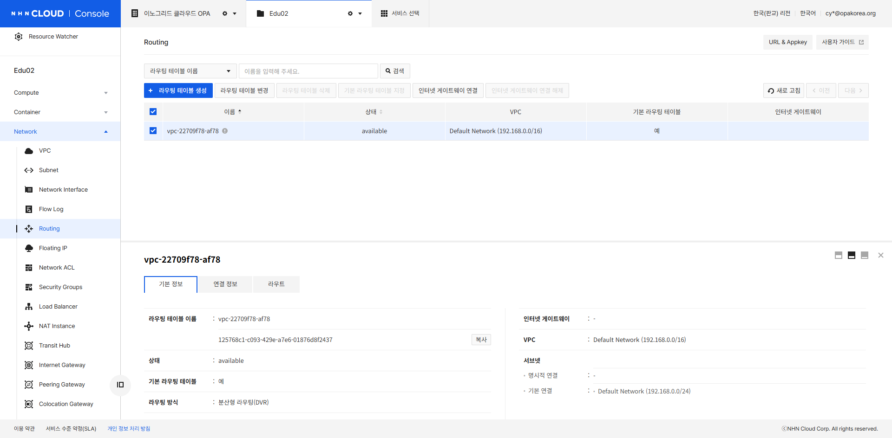
예, VPC Default Network, 라우팅 방식 분산형 라우팅(DVR), 인터넷 게이트웨이 정보 필드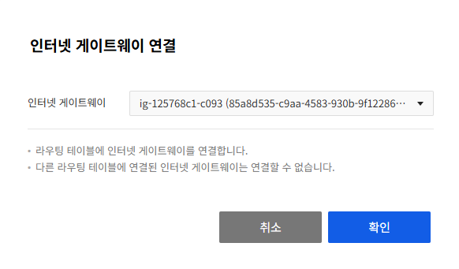
06 · Network — Floating IP
플로팅 IP는 인터넷에서 인스턴스를 직접 액세스하기 위해 필요한 기능(공인 IP)입니다.
인스턴스는 기본적으로 VPC 내부의 사설 IP만 가지므로 외부(인터넷)에서 직접 접근할 수 없습니다. 공인 IP를 사설 IP에 매핑해줘야 외부에서 SSH 접속이나 서비스 이용이 가능합니다.
외부 사용자가 접속해야 하는 웹서버, 관리자가 SSH로 접속해야 하는 배포 서버 등 인터넷을 통한 직접 접근이 필요한 인스턴스에 적용합니다.
- 외부 네트워크와 통신하려면 플로팅 IP를 인스턴스(정확히는 네트워크 인터페이스)에 연결하는 작업이 필요
- 외부 네트워크에 접근할 수 없는 네트워크 인터페이스(=인터넷 게이트웨이가 연결된 라우팅 테이블이 없는 서브넷)에는 플로팅 IP를 연결할 수 없음
- 다른 리전의 VPC와 통신할 경우 Peering Gateway의 리전 피어링 사용 시 트래픽 비용 절감 가능
플로팅 IP를 생성하면 인스턴스에 연결하지 않더라도 과금됩니다. 사용하지 않는 플로팅 IP는 삭제하는 것이 좋습니다.
Network > Floating IP 메뉴 진입
"플로팅 IP 생성" 클릭
IP 주소 자동 발급"연결" 버튼으로 연결
연결할 네트워크 인터페이스(또는 인스턴스) 선택 → 연결사용하지 않는 플로팅 IP 삭제
과금 방지
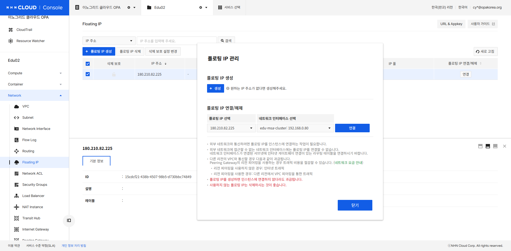
07 · Network — Security Groups
보안그룹은 인스턴스의 송수신 트래픽을 제어하여 인스턴스를 보호할 목적으로 사용합니다.
네트워크 경로(라우팅)는 "어디로 갈 수 있는가"만 정할 뿐, "어떤 트래픽을 허용할 것인가"는 별도로 통제해야 합니다. 예를 들어 DB 서버는 웹 서버로부터의 특정 포트 요청만 허용하고 나머지는 차단해야 하는데, 이를 인스턴스 단위로 세밀하게 제어하는 것이 보안 그룹입니다.
도로(라우팅)와 대문 경비(보안그룹)의 차이라고 생각하면 쉽습니다. 도로는 "이 길로 가면 그 동네에 도착한다"는 것만 알려줄 뿐이고, 경비는 그 길로 찾아온 사람을 실제로 들여보낼지 말지를 문 앞에서 다시 한번 확인합니다. 즉 라우팅은 "갈 수 있는 길"을, 보안 그룹은 "들여보낼 트래픽"을 결정합니다.
인스턴스별로 열어야 할 포트가 다를 때(웹서버는 80/443, DB서버는 3306만 특정 대역에서 허용 등) — 계층별 서비스에 각기 다른 접근 규칙을 적용합니다.
보안 그룹 생성 시 이름/설명을 입력하고, "보안 규칙 추가"에서 방향(수신/송신) · IP 프로토콜 · 포트(범위) · Ether(IPv4/IPv6) · 원격(CIDR) · 설명을 행 단위로 추가합니다. 기본(default) 보안그룹 예시로는 수신 TCP 1-65535 전체 허용(0.0.0.0/0 CIDR)이 있습니다.
Network > Security Groups 메뉴 진입
"보안 그룹 생성" 클릭이름/설명 입력
보안 규칙 추가
방향(수신/송신) - IP 프로토콜 - 포트 - Ether(IPv4/IPv6) - 원격(CIDR) - 설명을 행마다 지정,+로 규칙 추가확인 → 생성 완료
이후 Instance/Network Interface 생성 시 이 보안 그룹을 선택해 적용
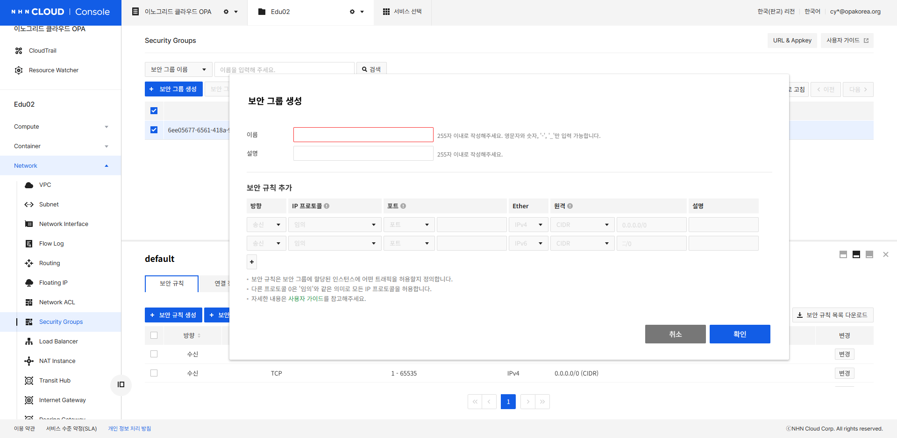
08 · Network — Internet Gateway
인터넷 게이트웨이를 이용하여 VPC의 리소스를 인터넷에 연결합니다.
VPC는 기본적으로 외부와 완전히 격리된 네트워크이므로, 이 경계를 통과해 인터넷과 오갈 수 있는 "문"이 있어야 합니다.
VPC 안의 리소스가 인터넷으로 나가거나(아웃바운드), 외부에서 Floating IP를 통해 들어올 때(인바운드) 반드시 거쳐야 하는 지점입니다.
인터넷 게이트웨이 생성 시 이름과 외부 네트워크(Public Network)를 지정합니다. 계정당 최대 3개까지 생성 가능하며, 생성 후 반드시 라우팅 테이블에 연결해야 실제로 인터넷을 사용할 수 있습니다(연결하지 않으면 경로가 없어 무용지물).
Network > Internet Gateway 메뉴 진입
"인터넷 게이트웨이 생성" 클릭이름 입력, 외부 네트워크(Public Network) 선택
확인 → 생성 완료
Routing 메뉴에서 라우팅 테이블에 연결
이 인터넷 게이트웨이를 라우팅 테이블에 연결 (필수)
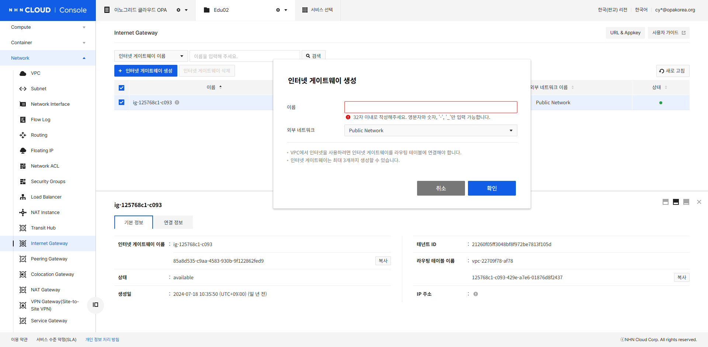
09 · Compute — Instance
인스턴스는 가상의 CPU, 메모리, 루트 블록 스토리지로 구성된 가상 서버입니다.
물리 서버를 직접 구매하지 않고도, 필요한 시점에 필요한 사양(vCPU/메모리/스토리지)만큼만 즉시 만들어 쓰고 없앨 수 있어야 합니다. 1강에서 배운 "사용량 기반 과금"과 "신속한 확장성"을 실제 자원 단위로 구현한 것이 인스턴스입니다.
웹서버, 애플리케이션 서버, 데이터베이스 서버 등 실제 워크로드가 동작하는 모든 계산 자원이 필요한 곳에 적용됩니다.
인스턴스 생성은 스토리지 → 인스턴스 정보 → 인스턴스 타입 → 키페어 → 네트워크 → 플로팅 IP → 보안 그룹 → 생성 → 확인 순서로 진행됩니다. 이 강의에서 만든 VPC/Subnet/Network Interface/Floating IP/Security Groups가 바로 이 단계에서 실제로 선택되어 하나의 가상 서버로 조립됩니다 — 지금까지의 모든 Network 단원은 결국 이 Instance 하나를 완성하기 위한 부품 준비 과정이었던 셈입니다.
레고 조립에 비유하면, 지금까지 만든 VPC·Subnet·Network Interface·Floating IP·Security Groups는 전부 낱개의 블록이고, Instance 생성 화면은 이 블록들을 순서대로 끼워 맞춰 자동차(가상 서버) 한 대를 완성하는 조립 설명서와 같습니다.
Compute > Instance 메뉴 진입
"인스턴스 생성" 클릭루트 블록 스토리지
블록 스토리지 타입(HDD 등), 크기(GB, 20~2048 슬라이더), 삭제 정책(인스턴스 삭제 시 유지/삭제) 선택기본 정보 설정
가용성 영역, 배치 정책, 인스턴스 이름(90자 이내), 설명, 인스턴스 타입 선택, 인스턴스 수키페어
기존 키페어 선택 또는 그 자리에서 "키페어 생성"으로 새로 생성 가능네트워크 설정
"네트워크 인터페이스 생성" 또는 "기존 네트워크 인터페이스 지정" 중 선택 → 서브넷 선택(선택된 서브넷은eth0으로 표시, 여러 네트워크 연결 시eth0이 기본 게이트웨이)플로팅 IP 선택
필요 시 — "로그인을 포함하여 다른 서비스에서 인스턴스에 접근하려면 플로팅 IP를 인스턴스에 연결해야 함"보안 그룹 선택
추가 설정(선택)
추가 블록 스토리지, 사용자 스크립트(초기 부팅 시 자동 실행 스크립트), 삭제 보호"인스턴스 생성" 클릭
유의: 인스턴스를 생성하는 순간부터 과금이 시작됨생성된 인스턴스 확인
목록/상세에서 OS, IP 주소, 인스턴스 타입, 키페어, 가용성 영역, 상태 확인 — 네트워크 탭에서 연결된 Network Interface/VPC/서브넷/사설IP/프라이빗 IP DNS/보안그룹 확인 가능
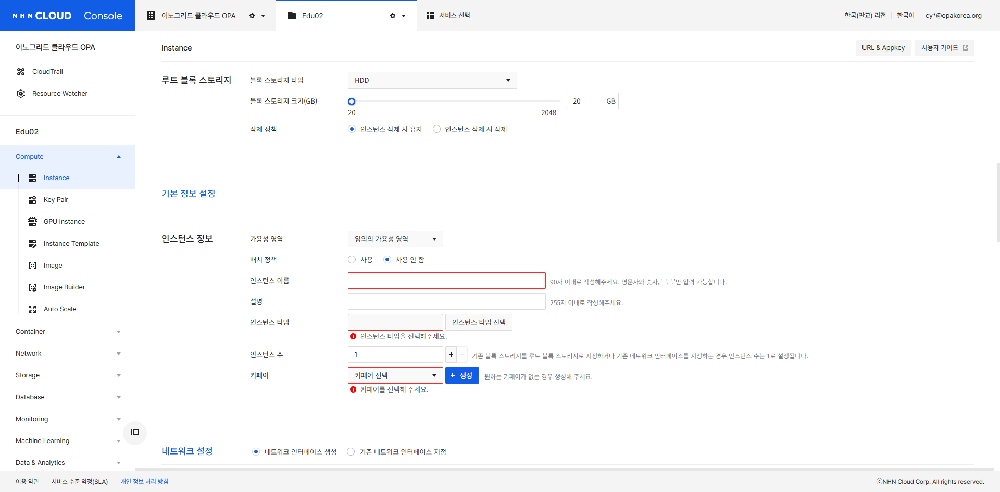
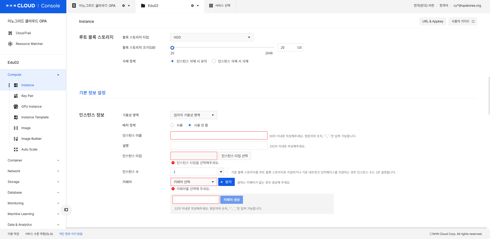
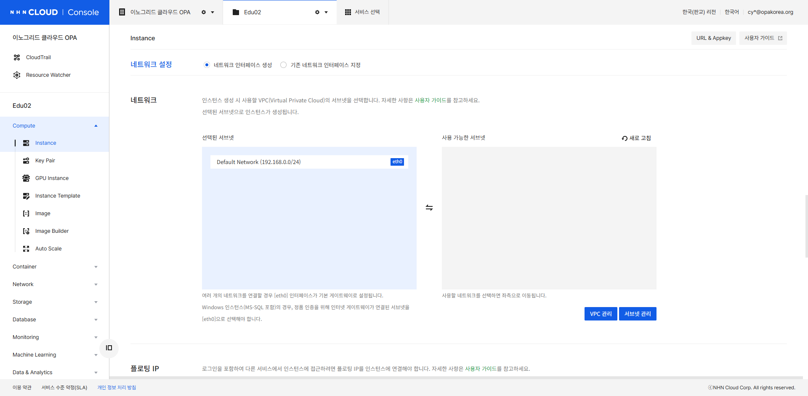
Default Network 192.168.0.0/24, eth0 라벨) vs 사용 가능한 서브넷 좌우 배치 UI, "여러 개의 네트워크를 연결할 경우 eth0 인터페이스가 기본 게이트웨이로 설정됩니다" 안내 포함인스턴스를 생성하는 순간부터 과금이 시작됩니다. 최종 확인 화면에서 이 경고 문구를 반드시 확인하고 생성 버튼을 눌러야 합니다.
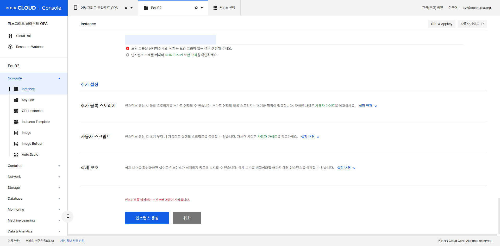
10 · Compute — Key Pair
키페어는 공개키 기반 구조(PKI, public key infrastructure)를 바탕으로 한 SSH 공개키, 개인키 쌍입니다.
비밀번호 대신 키 쌍으로 인증하면 개인키를 가진 사람만 서버에 접속할 수 있어, 비밀번호 유출이나 무차별 대입 공격에 더 안전합니다. 인스턴스 생성 시 반드시 이 키페어를 지정해야 SSH 접속 자격이 부여됩니다.
자물쇠(공개키)는 서버 쪽에 걸어두고, 그 자물쇠를 여는 열쇠(개인키)는 나만 가지고 있는 것과 같습니다. 열쇠를 잃어버리면 자물쇠를 통째로 새로 달아야 하듯, 개인키(.pem)를 잃어버리면 그 인스턴스에는 다시 들어갈 방법이 없습니다.
인스턴스를 생성할 때, 그리고 생성된 인스턴스에 SSH로 접속해 관리 작업을 해야 하는 모든 순간에 사용됩니다.
키페어를 콘솔에서 새로 생성하면 공개키가 자동 등록되고 개인키(.pem)는 그 자리에서 한 번만 다운로드됩니다(재다운로드 불가) — 분실 시 해당 개인키로는 다시 접속할 수 없으므로 가급적 USB 등 보조 저장매체에 별도 보관해야 합니다. 이미 로컬에 SSH 키가 있다면 "키페어 가져오기"로 공개키만 등록해서 사용할 수도 있습니다.
방법 A — 콘솔에서 키페어 생성
Compute > Key Pair 메뉴 진입
"키페어 생성" 클릭이름 입력
32자 이내, 영문자·숫자·-·_만 가능"생성" 클릭
개인키(.pem) 파일 즉시 다운로드 (재발급 불가, 분실 주의)
방법 B — 로컬에서 만든 키를 가져오기
로컬 환경에서 키 생성
아래 명령으로 공개/개인 키를 생성합니다. 이 코드가 하는 일을 한 줄로 요약하면: 내 컴퓨터에 SSH 접속용 "공개키 + 개인키" 한 쌍을 새로 만드는 명령입니다.ssh-keygen -t rsa -f cloud.key$ ssh-keygen -t rsa -f cloud.key Generating public/private rsa key pair. Enter passphrase (empty for no passphrase): Enter same passphrase again: Your identification has been saved in cloud.key Your public key has been saved in cloud.key.pub The key fingerprint is: SHA256:xxxxxxxxxxxxxxxxxxxxxxxxxxxxxxxxxxxxxxxxxx user@host The key's randomart image is: +---[RSA 3072]----+ | ... | | . o o | | o + . | | . = . E | | + S . | | . + o | | o + . | | + . | | . | +----[SHA256]-----+예시 화면 · 참고용 실제 지문(fingerprint) 값과 randomart 이미지는 키를 생성할 때마다 달라지며, 이 화면은 ssh-keygen 명령의 일반적인 출력 형태를 보여주기 위한 예시다.
Compute > Key Pair > "키페어 가져오기" 클릭
공개 키 등록
공개 키 파일을 선택하거나 직접 붙여넣고, 키페어 이름 입력 → 등록 (파일을 선택하면 키페어 이름과 공개 키가 자동 입력되며, 직접 입력도 가능)인스턴스 생성 후 접속
아래 명령으로 접속합니다(User 이름은 이미지에 따라 다를 수 있음). 이 코드가 하는 일을 한 줄로 요약하면: 방금 만든 개인키 파일로 인스턴스에 SSH 원격 접속하는 명령입니다.ssh -i cloud.key ubuntu@<instance_ip>$ ssh -i cloud.key ubuntu@<instance_ip> The authenticity of host '<instance_ip> (<instance_ip>)' can't be established. ED25519 key fingerprint is SHA256:xxxxxxxxxxxxxxxxxxxxxxxxxxxxxxxxxxxxxxxxxx. Are you sure you want to continue connecting (yes/no/[fingerprint])? yes Warning: Permanently added '<instance_ip>' (ED25519) to the list of known hosts. Welcome to <OS 배포판·버전 — 사용한 이미지에 따라 다름> ubuntu@instance:~$예시 화면 · 참고용 실제 접속 시 IP, 호스트 지문(fingerprint), 우분투 배포판 버전 등은 인스턴스 환경마다 다르며, 이 화면은 최초 SSH 접속 시 나타나는 일반적인 출력 형태를 보여주기 위한 예시다.
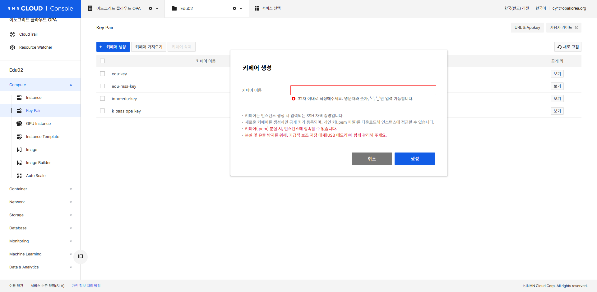
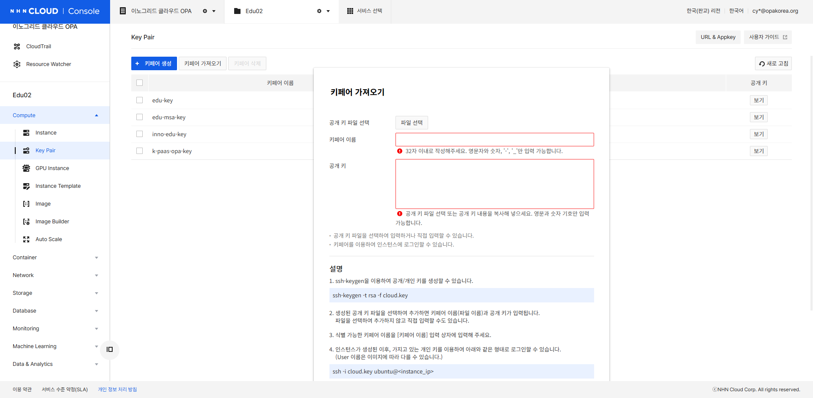
ssh-keygen -t rsa -f cloud.key, ssh -i cloud.key ubuntu@<instance_ip> 명령어가 화면에 그대로 노출됩니다.| 리소스 | 제약/유의사항 |
|---|---|
| Subnet | Routing Table과 연결 필수 |
| Routing | Internet Gateway와 연결 필수 |
| Network Interface | 기존 인스턴스에 추가 연결하려면 인스턴스 중지 필요 |
| Floating IP | 생성만 해도 인스턴스 미연결 시에도 과금됨 — 미사용 시 삭제 권장 |
| VPC | 계정당 최대 3개 생성 가능 |
| Subnet | VPC당 최대 10개 생성 가능 |
| Internet Gateway | 계정당 최대 3개 생성 가능 |
| Instance | 생성하는 순간부터 과금 시작 |
| Key Pair | 개인키(.pem)는 생성 시 1회만 다운로드 가능, 분실 시 재발급 불가 |
중요 용어 사전
- Container Platform
- 쿠버네티스 기반 단독 배포 + 부가서비스를 지원하는 오픈소스 PaaS
- Kubespray
- Ansible 기반 쿠버네티스 클러스터 자동 구축 도구
- CRI-O
- 쿠버네티스용 OCI 표준 컨테이너 런타임(경량, 이미지 빌드 기능 없음)
- Calico
- L3 기반 가상 네트워크 CNI 플러그인
- MetalLB
- Kubernetes Service를 LoadBalancer 타입으로 노출(L2/L3)
- Ingress Nginx Controller
- Ingress 리소스 규칙을 실제 적용·관리
- Helm
- 쿠버네티스 패키지 매니저(차트 기반)
- Istio
- 마이크로서비스 간 통신을 관리하는 서비스 메시
- Podman
- 데몬리스 리눅스 컨테이너 관리 도구
- OpenTofu
- Terraform 대체 오픈소스 IaC(코드형 인프라) 도구
- Kubeflow
- K-PaaS 클러스터구성 소프트웨어 목록에 포함된 ML 파이프라인 관련 컴포넌트(원문에 상세 설명 없음)
- NFS
- 네트워크 기반 분산 파일 공유 시스템(1984년 Sun Microsystems 개발)
- Rook Ceph
- Ceph 분산 스토리지를 쿠버네티스에서 자가관리 운영(CNCF Graduated)
- Vault
- 시크릿(토큰/키/비밀번호/인증서) 중앙 관리 시스템
- Harbor
- 웹 UI 기반 사설 컨테이너 이미지 레지스트리
- MariaDB
- MySQL 호환 오픈소스 RDBMS
- Keycloak
- OIDC/SAML/OAuth 2.0 기반 IAM·SSO 오픈소스
- OCI
- Open Container Initiative — 컨테이너 실행 표준
- CNI
- Container Networking Interface — 컨테이너 네트워킹 표준
- PKI
- Public Key Infrastructure — 공개키 기반 구조
- VPC
- 논리적으로 격리된 가상 네트워크
- Subnet
- IP 네트워크를 세분화한 IP 주소 영역
- Network Interface
- VPC 내 가상 네트워크 카드
- Routing(Table)
- CIDR 기반 트래픽 전달 경로 테이블
- DVR
- 분산형 라우팅(Distributed Virtual Router) — NHN Cloud 라우팅 방식
- Floating IP
- 인터넷에서 인스턴스에 직접 접근하기 위한 공인 IP
- Security Groups
- 인스턴스 송수신 트래픽을 제어하는 방화벽 규칙
- Internet Gateway
- VPC 리소스를 인터넷에 연결하는 게이트웨이
- Instance
- 가상 CPU/메모리/루트 블록 스토리지로 구성된 가상 서버
- Key Pair
- PKI 기반 SSH 공개키/개인키 쌍(인스턴스 접속 인증)
정리 & 다음 강의 연결
컨테이너 플랫폼(K-PaaS)이 무엇을 표준화하는지, 그 안에 어떤 오픈소스 조합이 들어가는지 정리했고, 그 모든 것이 실제로 올라갈 IaaS 자원(VPC → Subnet → Network Interface/Routing/Floating IP/Security Groups/Internet Gateway → Instance/Key Pair)을 NHN Cloud 콘솔에서 순서대로 만들어봤습니다.
다음 강의에서는 오늘 준비한 IaaS 자원(Instance) 위에, Part Ⅱ에서 살펴본 K-PaaS 오픈소스들을 실제로 설치해 컨테이너 플랫폼을 완성하는 과정을 다룰 예정입니다.